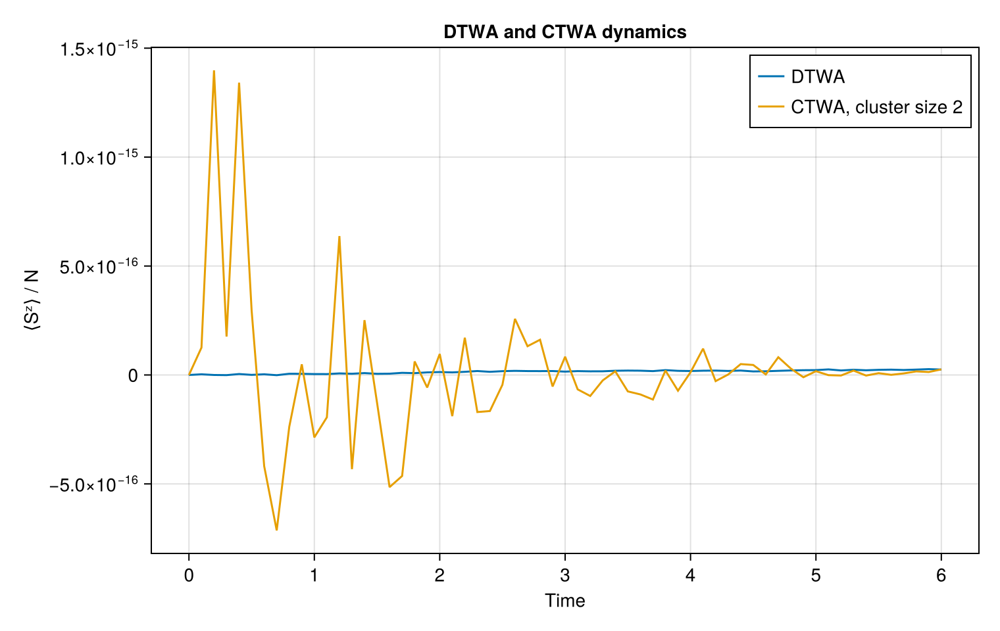

TWA.jl
TWA.jl provides a unified interface for truncated-Wigner approximations for interacting spin systems.
The package separates four concepts:
model = SpinModel(
Chain(50),
XXZ(J=1.0, Δ=0.5),
)
state = DomainWall()
method = DTWA(
trajectories=1000,
)
result = simulate(
model,
state,
method;
tspan=(0, 12),
) The same model and state can be simulated using different approximations, including DTWA and CTWA.
DTWA and CTWA
The same model and initial state can be evolved using different truncated-Wigner approximations.
